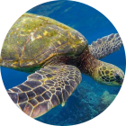
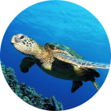

Conheça o
Projeto Casco
O Casco surge como uma plataforma para dar
suporte e apoio aos pesquisadores e biólogos no
seu trabalho de campo. O sistema web é
apresentado como ferramenta de captação de
dados oruindos das tartarugas marinhas
analisadas.
Este sistema oferece ao usuário uma melhor
experiência no seu ambiente de trabalho,
permitindo a coleta de dados referentes às
tartarugas de forma precisa e ágil. Tornando
assim o trabalho realizado por eles mais
produtivo.

